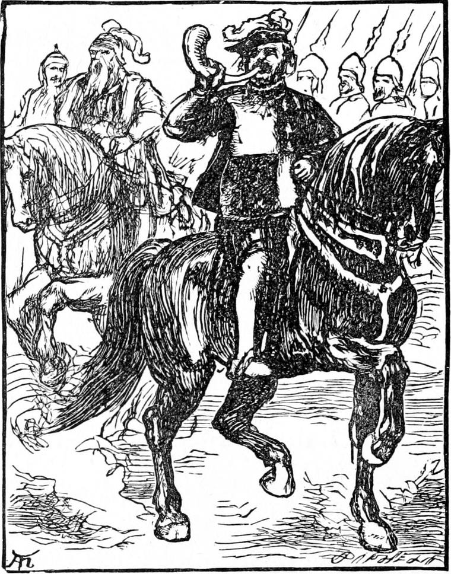
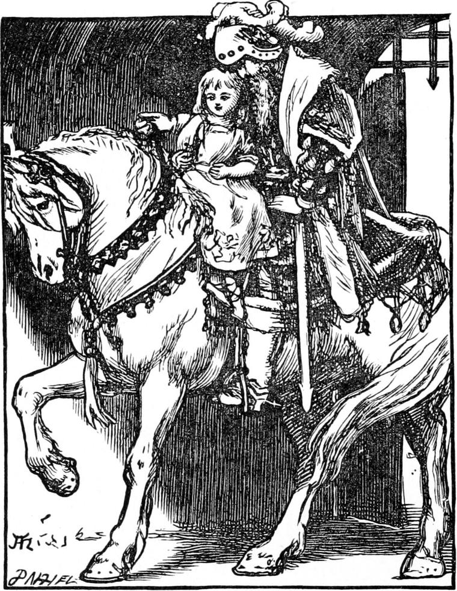
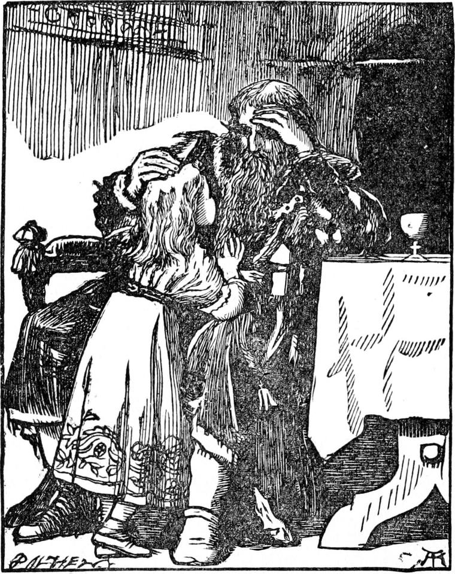

The weather continued fine for weeks, and the little princess went out every day. So long a period of fine weather had indeed never been known upon that mountain. The only uncomfortable thing was that her nurse was so nervous and particular about being in before the sun was down that often she would take to her heels when nothing worse than a fleecy cloud crossing the sun threw a shadow on the hillside; and many an evening they were home a full hour before the sunlight had left the weather-cock on the stables. If it had not been for such odd behaviour Irene would by this time have almost forgotten the goblins. She never forgot Curdie, but him she remembered for his own sake, and indeed would have remembered him if only because a princess never forgets her debts until they are paid.
One splendid sunshiny day, about an hour after noon, Irene, who was playing on a lawn in the garden, heard the distant blast of a bugle. She jumped up with a cry of joy, for she knew by that particular blast that her father was on his way to see her. This part of the garden lay on the slope of the hill and allowed a full view of the country below. So she shaded her eyes with her hand and looked far away to catch the first glimpse of shining armour. In a few moments a little troop came glittering round the shoulder of a hill. Spears and helmets were sparkling and gleaming, banners were flying, horses prancing, and again came the bugle-blast which was to her like the voice of her father calling across the distance: 'Irene, I'm coming.'

On and on they came until she could clearly distinguish the king. He rode a white horse and was taller than any of the men with him. He wore a narrow circle of gold set with jewels around his helmet, and as he came still nearer Irene could discern the flashing of the stones in the sun. It was a long time since he had been to see her, and her little heart beat faster and faster as the shining troop approached, for she loved her king-papa very dearly and was nowhere so happy as in his arms. When they reached a certain point, after which she could see them no more from the garden, she ran to the gate, and there stood till up they came, clanging and stamping, with one more bright bugle-blast which said: 'Irene, I am come.'
By this time the people of the house were all gathered at the gate, but Irene stood alone in front of them. When the horsemen pulled up she ran to the side of the white horse and held up her arms. The king stopped and took her hands. In an instant she was on the saddle and clasped in his great strong arms.

I wish I could describe the king so that you could see him in your mind. He had gentle, blue eyes, but a nose that made him look like an eagle. A long dark beard, streaked with silvery lines, flowed from his mouth almost to his waist, and as Irene sat on the saddle and hid her glad face upon his bosom it mingled with the golden hair which her mother had given her, and the two together were like a cloud with streaks of the sun woven through it. After he had held her to his heart for a minute he spoke to his white horse, and the great beautiful creature, which had been prancing so proudly a little while before, walked as gently as a lady—for he knew he had a little lady on his back—through the gate and up to the door of the house. Then the king set her on the ground and, dismounting, took her hand and walked with her into the great hall, which was hardly ever entered except when he came to see his little princess. There he sat down, with two of his counsellors who had accompanied him, to have some refreshment, and Irene sat on his right hand and drank her milk out of a wooden bowl curiously carved.
After the king had eaten and drunk he turned to the princess and said, stroking her hair:
'Now, my child, what shall we do next?'
This was the question he almost always put to her first after their meal together; and Irene had been waiting for it with some impatience, for now, she thought, she should be able to settle a question which constantly perplexed her.

'I should like you to take me to see my great old grandmother.'
The king looked grave And said:
'What does my little daughter mean?'
'I mean the Queen Irene that lives up in the tower—the very old lady, you know, with the long hair of silver.'
The king only gazed at his little princess with a look which she could not understand.
'She's got her crown in her bedroom,' she went on; 'but I've not been in there yet. You know she's there, don't you?'
'No,' said the king, very quietly.
'Then it must all be a dream,' said Irene. 'I half thought it was; but I couldn't be sure. Now I am sure of it. Besides, I couldn't find her the next time I went up.'
At that moment a snow-white pigeon flew in at an open window and settled upon Irene's head. She broke into a merry laugh, cowered a little, and put up her hands to her head, saying:
'Dear dovey, don't peck me. You'll pull out my hair with your long claws if you don't mind.'
The king stretched out his hand to take the pigeon, but it spread its wings and flew again through the open window, when its Whiteness made one flash in the sun and vanished. The king laid his hand on his princess's head, held it back a little, gazed in her face, smiled half a smile, and sighed half a sigh.
'Come, my child; we'll have a walk in the garden together,' he said.
'You won't come up and see my huge, great, beautiful grandmother, then, king-papa?' said the princess.
'Not this time,' said the king very gently. 'She has not invited me, you know, and great old ladies like her do not choose to be visited without leave asked and given.'
The garden was a very lovely place. Being upon a Mountainside there were parts in it where the rocks came through in great masses, and all immediately about them remained quite wild. Tufts of heather grew upon them, and other hardy mountain plants and flowers, while near them would be lovely roses and lilies and all pleasant garden flowers. This mingling of the wild mountain with the civilized garden was very quaint, and it was impossible for any number of gardeners to make such a garden look formal and stiff.
Against one of these rocks was a garden seat, shadowed from the afternoon sun by the overhanging of the rock itself. There was a little winding path up to the top of the rock, and on top another seat; but they sat on the seat at its foot because the sun was hot; and there they talked together of many things. At length the king said:
'You were out late one evening, Irene.'
'Yes, papa. It was my fault; and Lootie was very sorry.'
'I must talk to Lootie about it,' said the king.
'Don't speak loud to her, please, papa,' said Irene. 'She's been so afraid of being late ever since! Indeed she has not been naughty. It was only a mistake for once.'
'Once might be too often,' murmured the king to himself, as he stroked his child's head.
I can't tell you how he had come to know. I am sure Curdie had not told him. Someone about the palace must have seen them, after all.
He sat for a good while thinking. There was no sound to be heard except that of a little stream which ran merrily out of an opening in the rock by where they sat, and sped away down the hill through the garden. Then he rose and, leaving Irene where she was, went into the house and sent for Lootie, with whom he had a talk that made her cry.
When in the evening he rode away upon his great white horse, he left six of his attendants behind him, with orders that three of them should watch outside the house every night, walking round and round it from sunset to sunrise. It was clear he was not quite comfortable about the princess.